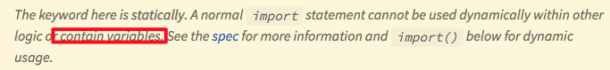
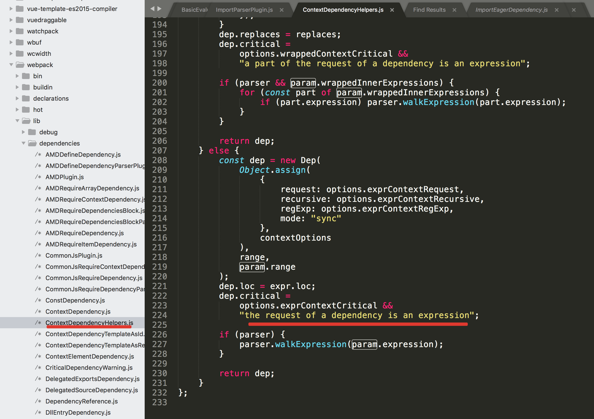
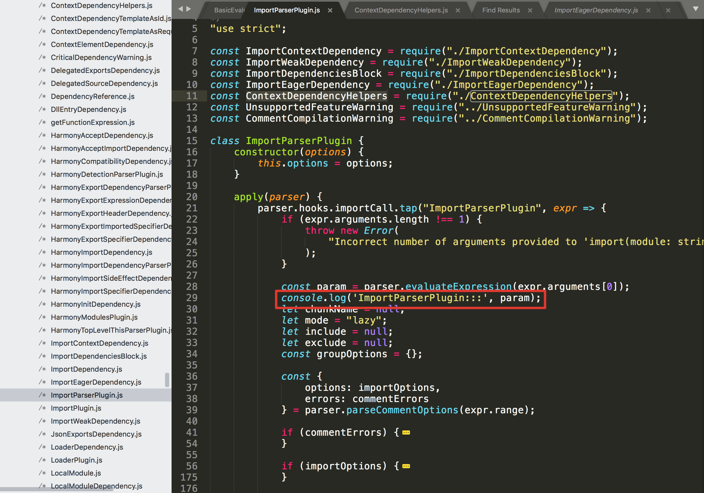

webpack中import()为什么不能传入变量?
有小伙伴问如下两种写法区别在哪，为什么第二种找不到组件？
1 正确写法：import中传入字符串
1 | export default [ |
2 错误写法：import中传入变量
1 | let aaa = '../views/overview/UnionView'; |
根据webpack官方文档，发现有一个黄条提示。

问题就在这里，这个现象其实是与webpack import()的实现高度相关的。
由于webpack需要将所有import()的模块都进行单独打包，所以在工程打包阶段，webpack会进行依赖收集。
此时，webpack会找到所有import()的调用，将传入的参数处理成一个正则，如：
1 | import('./app'+path+'/util') => /^\.\/app.*\/util$/ |
import参数中的所有变量，都会被替换为 .，而webpack就根据这个正则，查找所有符合条件的包，将其作为package进行打包。
以上都是我在网上抄来的*经验主意,作为一个程序员还是应该从源码出发，探其究竟的。
上面的解释是网上的一段摘抄。另外一种解释说法是
import为静态型，这种行为的本质是会在编译阶段执行，即import命令会有提升效果，提升到整个模块的头部执行。
MDN参考文档但我发现在编译过程中，并没有因为import中写如变量而导致编译报错，推测webpack中用的应该是import动态函数的特性（import原来为静态型，后来升级出了个动态函数的用法）两种说法到底哪个是真正原因呢？下面就是我追本溯源，按图索骥的步骤，以及一些思考：
按照代码2的方式运行时，webpack其实已经报了一个WARNING:
Critical dependency: the request of a dependency is an expression。
根据这段提示，我找到了打印这个语句的源码部分

逐步向上寻找，定位到在解析import()加载的包时，会根据import中的参数类型做处理

那么问题来了，为什么webpack会将import中的变量替换为.*呢？根据MDN官方文档
另外两种可行的写法
1 |
|
如果我非要用变量怎么写呢？可以用require，参考文档
1 | let aaa = '../views/overview/UnionView'; |
那有同学可能会问，require这种方式加载文件，是不是要做一些配置
1 | // dep.js |